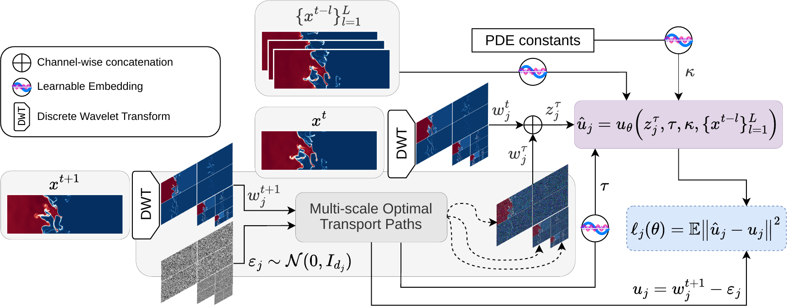
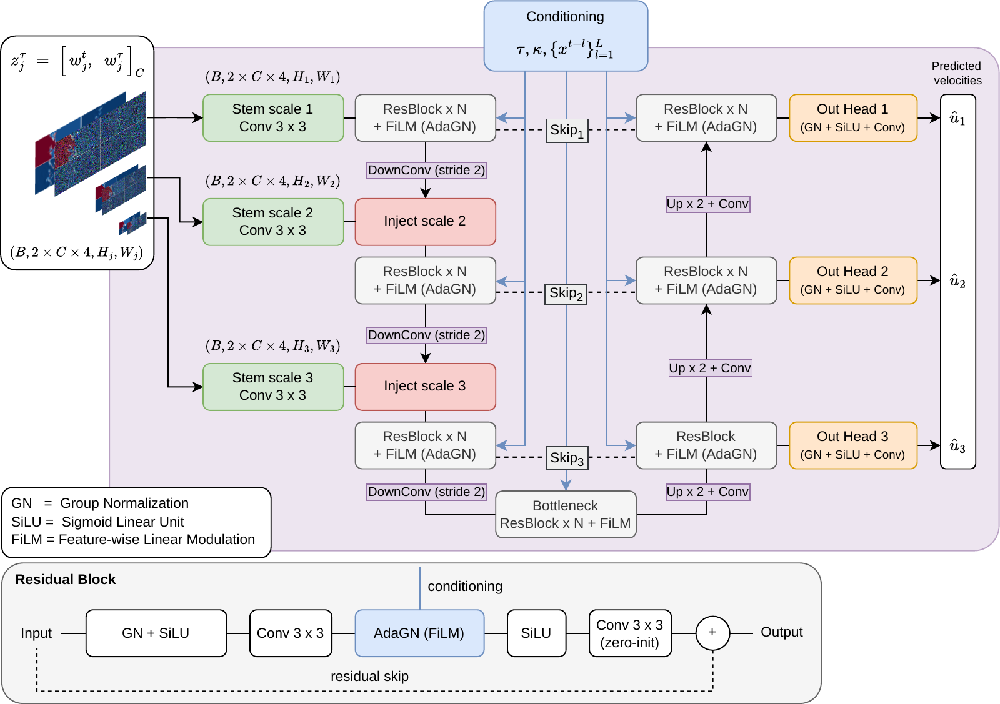
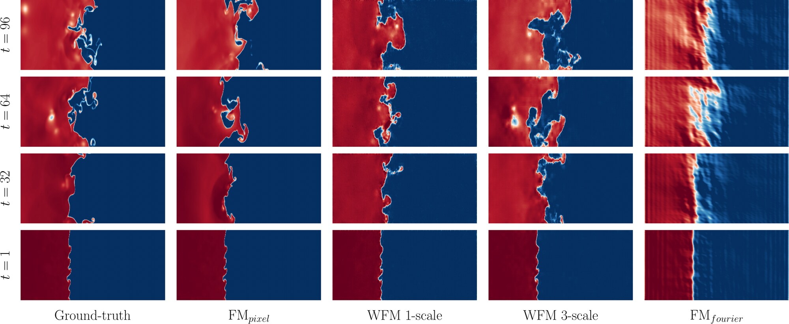
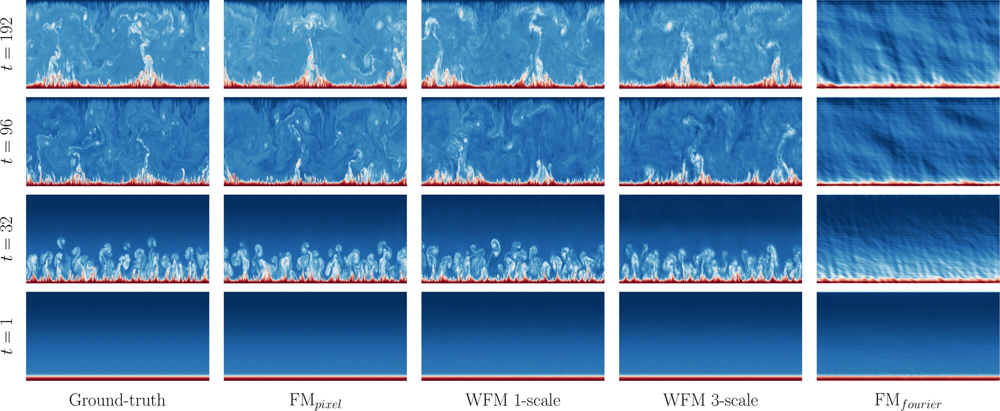
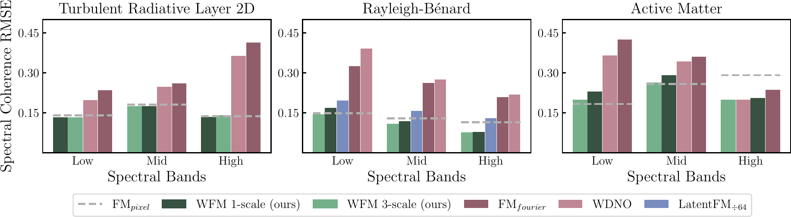
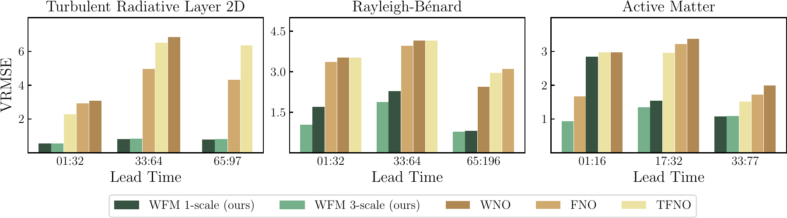
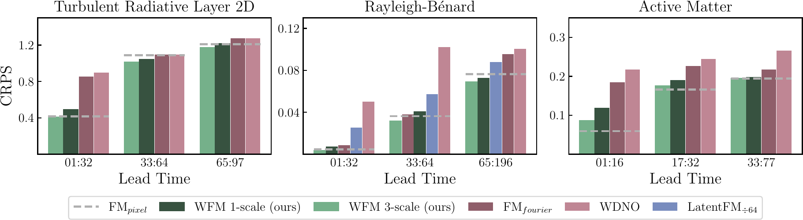
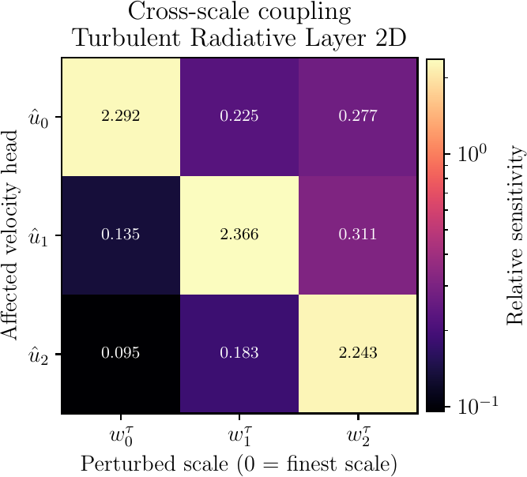

#Abstract
Accurate emulation of multi-scale physical systems governed by PDEs demands models that remain stable over long autoregressive rollouts while preserving fine-scale structures. Deterministic emulators produce overly smoothed predictions, while generative approaches better capture details but are costly. Latent-space generative models have emerged as a compromise but with the additional cost of separately pre-trained autoencoders. We propose Wavelet Flow Matching (WFM), a generative emulator that overcomes current trade-offs between cost and skill by performing optimal-transport flow matching directly in the multi-scale wavelet space. Rather than learning a latent compression, WFM leverages the hierarchical structure of a U-Net to jointly predict the transport velocities of a prescribed, lossless wavelet representation. On three challenging systems of chaotic fluid dynamics, WFM achieves superior spectral coherence and competitive or better long-horizon accuracy compared to state-of-the-art models. Our results position the wavelet space as an effective training-free representation for generative emulation of complex physical dynamics.
#Method

1 · A lossless multi-scale representation
The discrete wavelet transform (DWT) decomposes a field into components that are localized simultaneously in space and in scale. For an orthonormal wavelet $\psi$ with scaling function $\phi$,
$$ f \;=\; \sum_{n} a_J[n]\,\phi_{J,n} \;+\; \sum_{j=1}^{J}\sum_{n} d_j[n]\,\psi_{j,n}, \qquad \psi_{j,n}(x) = 2^{-j/2}\,\psi\!\left(2^{-j}x - n\right). $$Applied to a state $x \in \mathbb{R}^{C\times H\times W}$, each scale yields one approximation (LL) and three oriented detail sub-bands (LH, HL, HH) on a progressively coarser grid,
$$ w_j = \mathcal{W}_j(x) \in \mathbb{R}^{C \times 4 \times H_j \times W_j}, \qquad H_j \approx H/2^{j},\;\; W_j \approx W/2^{j}, $$and the inverse transform reconstructs the field exactly, $x = \mathcal{W}^{-1}(w)$. We use Daubechies wavelets ($\mathrm{haar}$, $\mathrm{db}2$, $\mathrm{db}4$, $\mathrm{db}6$): no training, no information loss.
2 · One flow per scale, one shared network
Instead of modelling $p(x^{t+1}\mid x^t)$ in pixel space, WFM learns $p\bigl(w^{t+1} \mid w^t, \{x^{t-l}\}_{l=1}^{L}, \kappa\bigr)$. At every scale $j$ we build a straight optimal-transport path from scale-matched Gaussian noise to the target coefficients, with a shared interpolation time:
$$ w_{j}^{\tau} = \tau\, w_{j}^{t+1} + (1-\tau)\,\varepsilon_{j}, \qquad \tau \sim \mathcal{U}([0,1]), \quad \varepsilon_j \sim \mathcal{N}(0, I). $$Because the basis is orthonormal, sampling noise directly in wavelet space is equivalent in distribution to transforming pixel-space noise, $\mathcal{W}_j(\varepsilon) \overset{d}{=} \varepsilon_j$. The target velocity along each path is constant:
$$ u_j = \frac{d\,w_j^{\tau}}{d\tau} = w_j^{t+1} - \varepsilon_j . $$The velocity network is a U-Net whose encoder–decoder hierarchy mirrors the DWT. The coefficients $z_j^{\tau} = [\,w_j^{t},\, w_j^{\tau}\,]_C$ of each scale are injected at the matching encoder level through a dedicated stem, and $J$ decoder heads predict $\hat u_j$ at their native resolution. Because all heads share one backbone, the $J$ flows are coupled at every integration step.
3 · Variance-normalized multi-scale objective
Approximation and detail coefficients differ in energy by orders of magnitude. To prevent the LL sub-band from dominating, each per-scale loss is normalized by the spatial variance of its target velocity:
$$ \ell_j(\theta) = \mathbb{E}\!\left[\frac{1}{BC}\sum_{b,c} \frac{\bigl\langle (\hat u_j - u_j)^2 \bigr\rangle} {\bigl\langle (u_j - \langle u_j\rangle)^2 \bigr\rangle + \epsilon}\right], \qquad \mathcal{L}(\theta) = \sum_{j=1}^{J} \frac{\lambda_j}{\sum_{j'}\lambda_{j'}}\,\ell_j(\theta). $$4 · Sampling and autoregressive rollout
Sampling happens entirely in wavelet space. Starting from $w_j^{0} = \varepsilon_j$, we integrate the learned field with $N$ Euler steps,
$$ w_j^{\tau_{n+1}} = w_j^{\tau_n} + \Delta\tau\; u_\theta\!\left(\bigl[w_j^{t}, w_j^{\tau_n}\bigr]_C,\, \tau_n,\, \kappa,\, \{x^{t-l}\}_{l=1}^{L}\right), $$and recover the physical state with a single inverse transform, $\hat x^{t+1} = \mathcal{W}^{-1}\bigl(\{\hat w_j^{t+1}\}_{j=1}^{J}\bigr)$, which is fed back as the next input.
Show the velocity-predicting U-Net

#Rollouts
Autoregressive rollouts on two systems from The Well with distinct dynamics: shear-driven Kelvin–Helmholtz mixing with radiative cooling, and buoyancy-driven convection from laminar to turbulent regimes. Each panel shows one sample at increasing lead times.


#Results
We compare against flow matching in pixel space (FMpixel, an architecturally identical control), in Fourier space (FMfourier, capacity-matched to WFM 3-scale), in the latent space of a pre-trained 64× autoencoder (LatentFM÷64), the Wavelet Diffusion Neural Operator (WDNO), and deterministic neural operators (FNO, TFNO, WNO). All flow-matching models share the U-Net, objective and sampler ($N=50$ Euler steps, $\mathcal{M}=8$ trajectories); they differ only in the space where generation happens. Scores are averaged over three inference seeds.
Spectral coherence
| Model | Turbulent Radiative Layer 2D | Rayleigh–Bénard | Active Matter |
|---|---|---|---|
| WFM 1-scale | 0.147 (haar) | 0.121 (db4) | 0.241 (haar) |
| WFM 3-scale | 0.149 (haar) | 0.109 (db4) | 0.220 (db2) |
| FMpixel | 0.153 | 0.131 | 0.244 |
| FMfourier | 0.379 | 0.266 | 0.376 |
| WDNO | 0.271 | 0.467 | 0.304 |
| LatentFM÷64 | – | 0.162 | – |

Accuracy and calibration
WFM 3-scale outperforms all deterministic baselines in VRMSE and the other generative baselines in CRPS across all systems, and is competitive with the pixel-space control.


Robustness across dynamical regimes
The advantage of a multi-scale representation is clearest in the most chaotic regimes: the shortest cooling times in TRL, where rapid condensation produces a highly corrugated interface, and the highest Rayleigh number in Rayleigh–Bénard. On RB, WFM achieves the lowest CRPS across the full $Ra$–$Pr$ parameter space.
| Model | 0.03 | 0.06 | 0.1 |
|---|---|---|---|
| WFM-1 haar | 1.165 | 1.135 | 0.865 |
| WFM-1 db2 | 1.112 | 1.078 | 0.878 |
| WFM-1 db4 | 1.170 | 1.102 | 0.847 |
| WFM-1 db6 | 1.076 | 1.074 | 0.831 |
| WFM-3 haar | 1.107 | 1.117 | 0.868 |
| WFM-3 db2 | 1.248 | 1.141 | 0.894 |
| WFM-3 db4 | 1.048 | 1.006 | 0.817 |
| WFM-3 db6 | 1.075 | 1.034 | 0.882 |
| FMpixel | 1.220 | 1.126 | 0.875 |
| FMfourier | 1.439 | 1.424 | 1.195 |
| WDNO | 3.330 | 3.292 | 3.183 |
| Model | $10^{6}$ | $10^{8}$ | $10^{10}$ |
|---|---|---|---|
| WFM-1 haar | 0.059 | 0.060 | 0.051 |
| WFM-1 db2 | 0.052 | 0.062 | 0.052 |
| WFM-1 db4 | 0.059 | 0.060 | 0.051 |
| WFM-1 db6 | 0.060 | 0.069 | 0.075 |
| WFM-3 haar | 0.060 | 0.060 | 0.055 |
| WFM-3 db2 | 0.054 | 0.055 | 0.049 |
| WFM-3 db4 | 0.053 | 0.058 | 0.048 |
| WFM-3 db6 | 0.065 | 0.055 | 0.057 |
| FMpixel | 0.057 | 0.066 | 0.051 |
| FMfourier | 0.071 | 0.081 | 0.065 |
| WDNO | 0.120 | 0.117 | 0.116 |
| LatentFM÷64 | 0.087 | 0.067 | 0.065 |
Bold = best, green = second best. Mean over three inference seeds (42, 84, 168).
#Efficiency
Because the generative process runs on spatially smaller coefficient maps, WFM samples faster than FMpixel under identical conditions (same trajectories, NFEs, solver and hardware), with essentially the same memory footprint.
WFM also needs no pre-training stage: it trains in about 6 hours on 4×A100, whereas the Rayleigh–Bénard autoencoder used by latent-space flow matching required about one day on 8×H100 before any generative model could be trained.
| System | WFM 1-scale | WFM 3-scale |
|---|---|---|
| Turbulent Radiative Layer 2D | 1.25× | 1.14× |
| Rayleigh–Bénard | 1.52× | 1.38× |
| Active Matter | 1.46× | 1.26× |
#Coupling, physics and robustness

The flows are coupled
Independent per-scale flows would give zero off-diagonal sensitivity. Perturbing one scale changes the velocity predicted at all others: 15.1% of the total sensitivity lies off the diagonal, flowing both coarse-to-fine and fine-to-coarse through the shared encoder–decoder.
Physical consistency
On TRL, WFM 3-scale tracks the reference kinetic energy as well as FMpixel and better at the longest horizon. On RB and AM the pixel-space control has lower late-horizon kinetic-energy error, while WFM stays below FMfourier and WDNO.
Robust to initial conditions
Perturbing the initial conditions with Gaussian noise of up to 10% of each channel’s standard deviation changes CRPS by at most 2.1% and leaves spectral coherence unchanged at three decimals.
#Limitations
We only explore the Daubechies family of orthonormal wavelets; symlets and coiflets remain untested, and the mother wavelet is currently selected per dataset rather than learned or chosen a priori. The DWT assumes regular grids and handles non-periodic boundaries through padding. Extending WFM to irregular meshes and spherical domains would open the way to weather and climate emulation.
#BibTeX
@inproceedings{accarino2026wfm,
title = {Wavelet Flow Matching for Multi-Scale Physics Emulation},
author = {Accarino, Gabriele and Nathaniel, Juan and Roesch, Carla and
Gentine, Pierre and Shamekh, Sara and Watson-Parris, Duncan and
Acquaviva, Viviana},
booktitle = {Advances in Neural Information Processing Systems},
year = {2026}
}#Acknowledgements
We acknowledge funding from NSF through the Learning the Earth with Artificial intelligence and Physics (LEAP) Science and Technology Center (Award #2019625). VA acknowledges support from a PIVOT Research award (Award #12871) from the Simons Foundation. This work used NSF NCAR Derecho-GPU through allocation CIS251353 from the ACCESS program, supported by U.S. National Science Foundation grants #2138259, #2138286, #2138307, #2137603, and #2138296.